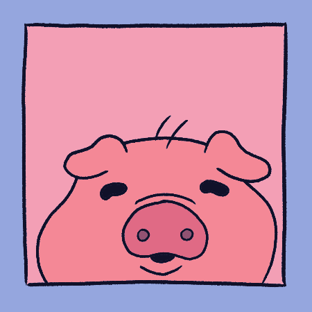
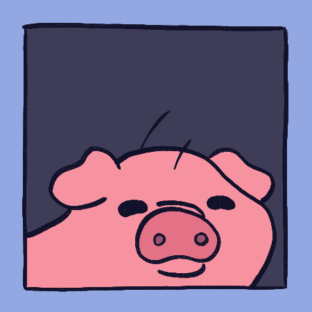

Gus
Gus is Milo's pig, and the third member of the main trio. Gus is a pretty chill pig (expect for when Nico suggests eating him.) He really, really likes to eat. so much so that it often causes problems for Team Milo. He kinda doesn't do much else, but we love him anyways.
Image Gallery
This is where I will later have images and concept art of this character.


- Stats -
Strength: B
Dexterity: D
Constitution: A
Intelligence: D
Wisdom: D
Charisma: B